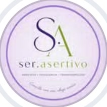

Empatía
Aceptación
Autenticidad
9:41
jueves 15 de octubre
9:41

ser.asertivo
ahora
¿Cuándo fue la última vez que dijiste
que no
sin sentir culpa?
¿Qué te está
pesando
hoy?
Decir que no
Poner límites
Autoestima
Vínculos
Ansiedad y estrés
Decisiones
Sandra · ser.asertivo
en línea
Hola Sandra, quiero empezar 🙂
9:42 ✓✓
Counseling · Sandra Sproviero
Empatía
Aceptación
Autenticidad
Enfoque Centrado en la Persona
Conocerse es
comprenderse.
Escribime
@ser.asertivo